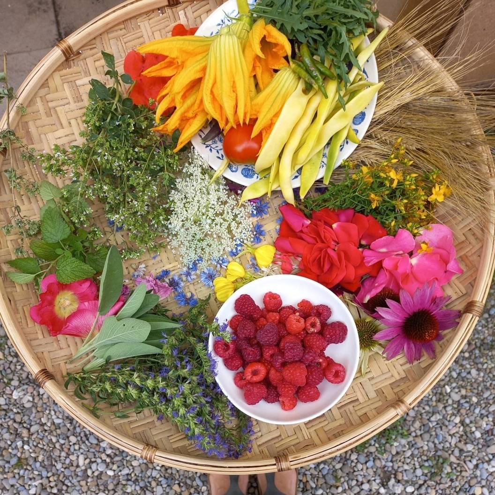
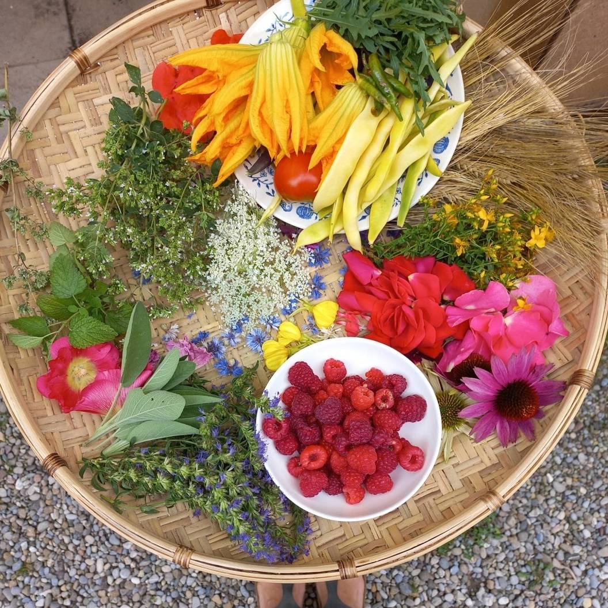

In one of my early coding projects, I developed a Named Enity Recognition text processing pipeline
(BOTANICAL NER)
to detect and extract scientific and vernacular plant names from German and English texts.
The processing pipeline has been applied to
digitized botanical works to make species-related information available as Linked Open
Data
(more
INFO).
After my studies, I gained some experience in frontend web development and database maintenance
for endangered mushroom and lichen species and geo-distributed data, such as the
SPECIES WEB ATLAS.
Another research project involved developing a conversion pipeline for Linked Open Data for
visualizing forest data (LD-LFI).
For friends and interesting projects, I develop websites and databases with a thematic focus on art, biodiversity, agriculture, design, typography, and other cool topics.
I mainly work with Python, Vue.js, Angular, and SQL but I also enjoy shell scripts and playing around with maps, eg. OpenLayers, and Linked Open Data, eg. OWL and RDF.


 
